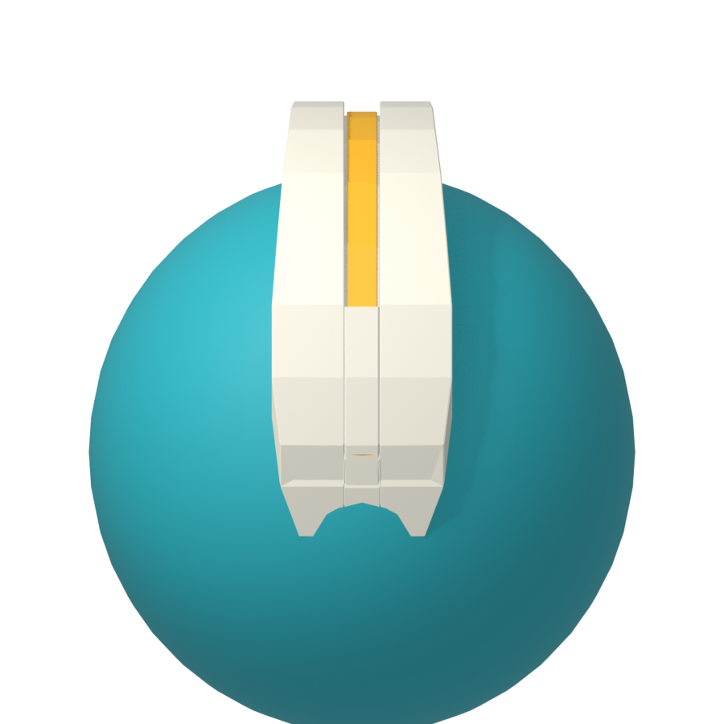
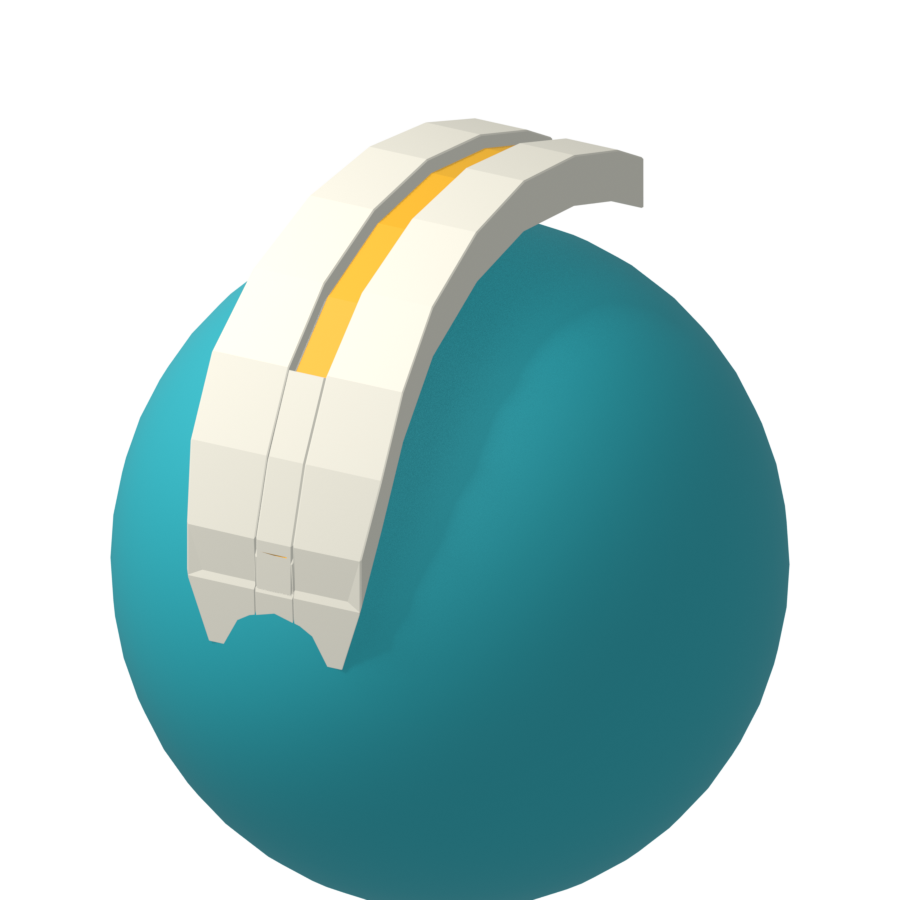
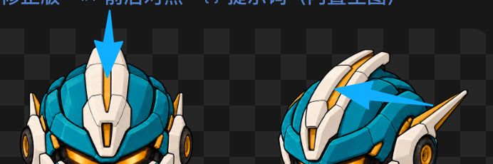
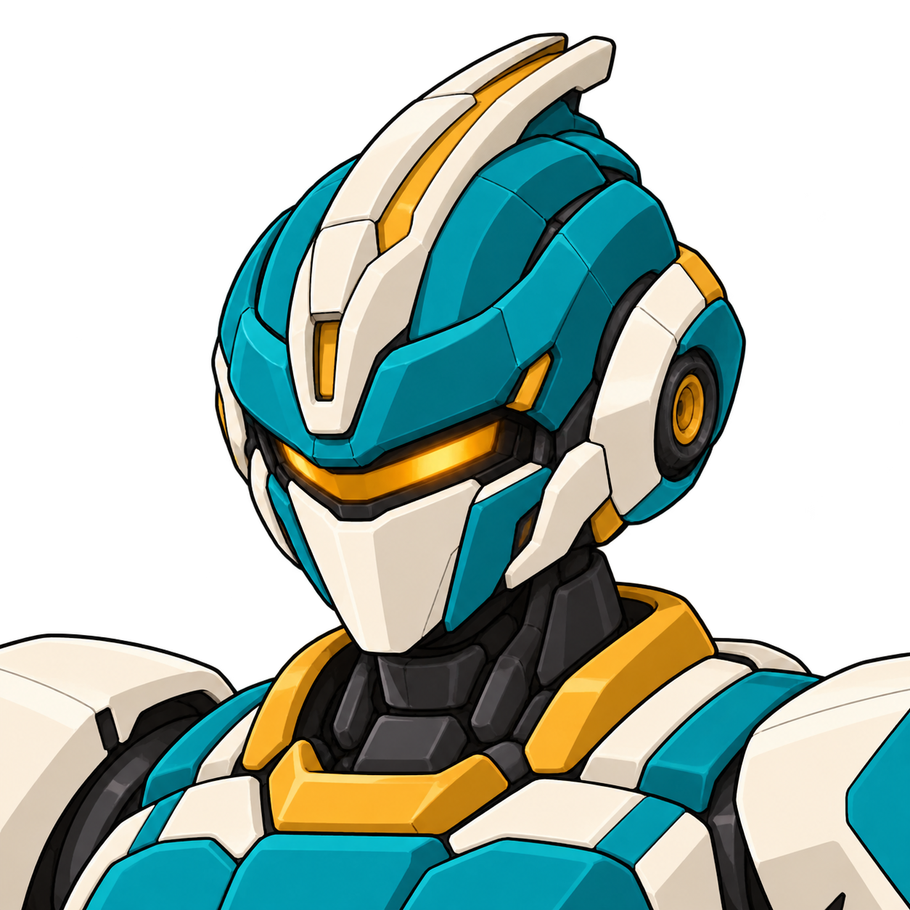
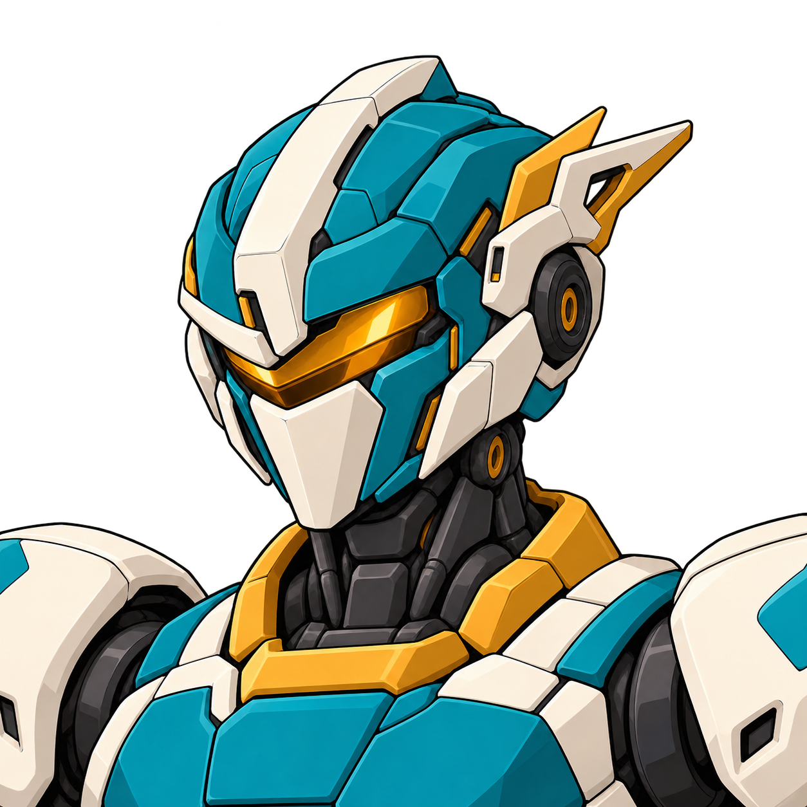

2026.10.19 · 当前已确认头部R16
R16头部源设计已确认
用户最新明确当前可以，R16指定头部固定。低额块、侧后双天线、正常头壳比例与琥珀视窗/白面甲保持；整机先合回颈下，再补多视图。
此前R11局部确认及修正历史（当前主冠位置已重新开放）
2026.10.19 · R11头部已确认 · 整机三视已补
中间是白色实体，黄色凹槽在左右两侧
用户已明确：正面黄槽在标出的两条线，中央是白色实体。此前作者把近侧槽误读为中轴槽，截面解释错误。本次按用户标注填白中轴，并在左右各开一道黄色槽。
左侧R11为本次修正，右侧仍是已采用R9b母稿，未改动。脸型、配色、侧天线及下方小黄块保留；本次用户已回复“ok这样可以了”，该头部设计固定。


从左到右的结构是：白色外缘 → 左黄槽 → 白色中脊 → 右黄槽 → 白色外缘。图二看到的是近侧槽，远侧槽可以被遮挡；不能再解释成单条中轴长槽。下方独立短矩形黄块保留。
打开正面R11原图 · 内置生图的完整实际提示词 · 本次来源与作者观察 · 三分之四设计采用范围
已废止：作者误读时制作的单中槽几何参考


以下单中槽模型建立在错误截面上，已被用户的双槽/白中脊解释覆盖，不得作为当前制作参考。保留仅用于记录此前错误。
用户指出的原错误与失败稿

R8原稿：未解决这个错误。R9整张编辑尝试：槽和侧壁仍含混，未选用。R9b三分之四此后已由用户采用，但作者仍误读为单中槽。R10错误正面保留为历史；当前按用户双线标注修正为R11。


A+E原选型与现有馆守Z对照


无牌继续使用青绿/象牙白、连续琥珀视窗与封闭面甲，区别现有馆守Z的前额横向金角、分开双眼和口栅。馆守Z沿用现有资产，不重做。

作者已查看R11完整返回图和用户标线：长槽为两条，中轴为连续白色，下方小黄块保持。本次头部源设计已确认；新整机三视图、模型与运行仍分别看稿和检查。